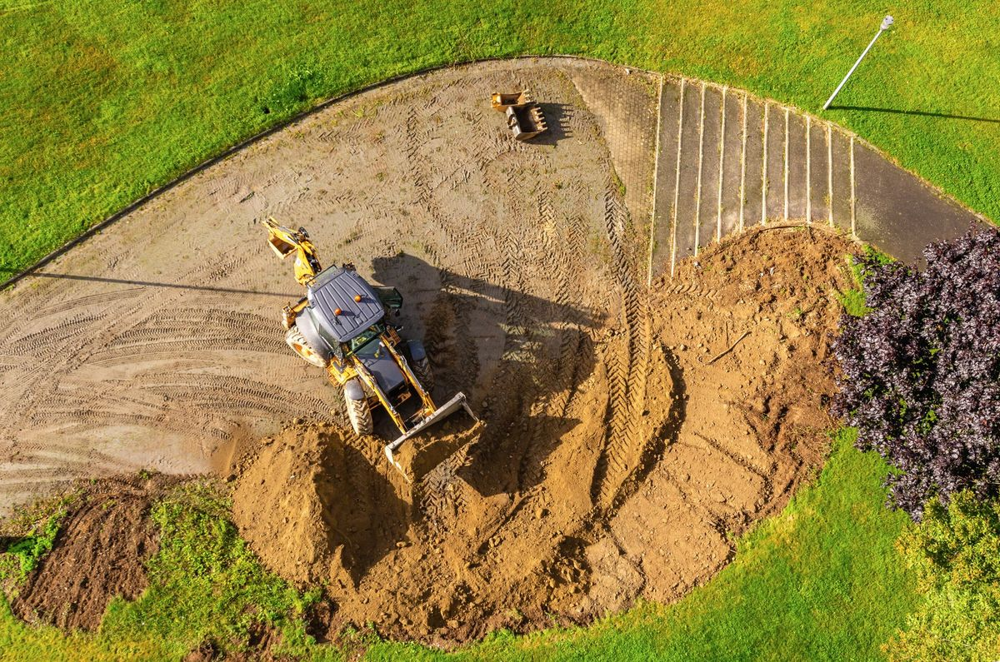
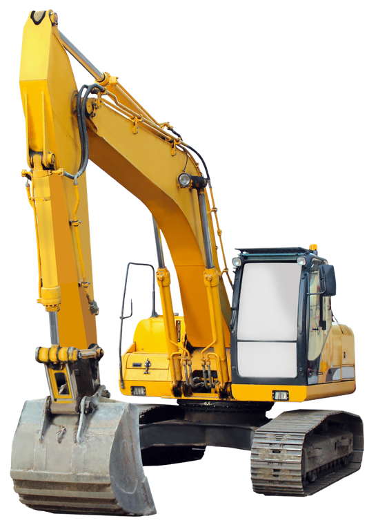
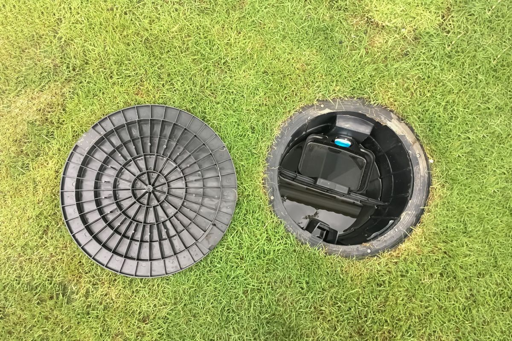
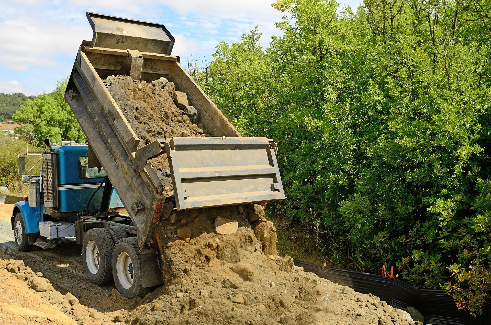
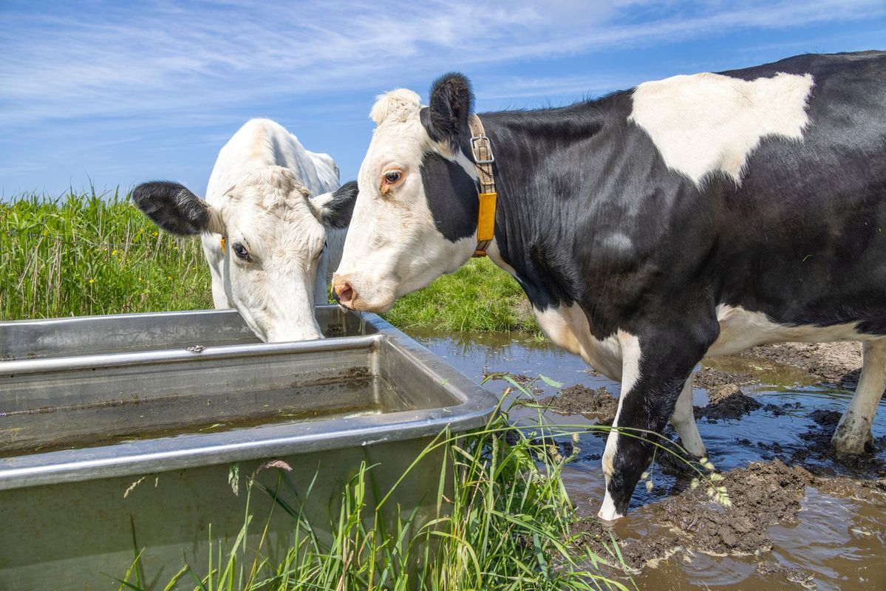
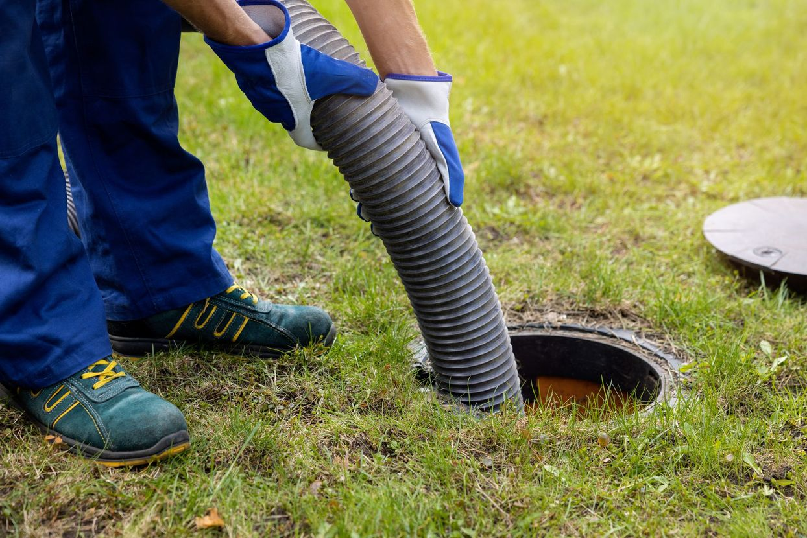

TERRASSEMENT

Depuis plus de 40 ans, nous réalisons tous vos travaux de terrassement et d'assainissement. Contactez-nous pour votre devis gratuit !

Nous intervenons dans divers domaines afin de vous fournir un service complet pour votre projet de construction, de rénovation ou de démolition.
Vous avez une question sur nos services ? Contactez-nous pour obtenir un devis gratuit !




En tant qu'entreprise de terrassement à Guéret, nous concevons chaque projet de construction avec le plus grand soin. Notre mission est de préparer le terrain pour y construire une maison, un bâtiment, ou alors un pavillon.
Le terrassement joue un rôle crucial dans la création de fondations solides et sécurisées. Un terrassement bien réalisé assure non seulement la stabilité de votre construction, mais prévient également les problèmes d'humidité.
Confiez-nous vos travaux de terrassement pour un sol bien préparé et nivelé. Nous mettons toutes nos compétences en maçonnerie et en aménagement de terrain à votre service.
Nous proposons une gamme complète de services d'assainissement adaptés aux besoins uniques de chaque client. Nos travaux comprennent la pose de fosses toutes eaux, idéales pour les propriétés isolées qui ne peuvent pas être connectées au réseau public d'assainissement. Nous installons également des microstations d'épuration et des stations d'épandage, parfaites pour les petites surfaces.
Pour les maisons situées en zone urbaine, nous proposons le raccordement au tout-à-l'égout. Ce système relie votre maison au réseau d'assainissement public de la commune, garantissant ainsi un traitement optimal des eaux usées.
Nous procédons également à l'installation de collecteurs pour la récupération des eaux de pluie dans le tout-à-l'égout et la citerne. Cela favorise une utilisation plus écologique et économique de l'eau.

Tixier Travaux Publics, notre entreprise de terrassement, étend sa gamme de services au transport routier. Vous êtes un particulier ou une entreprise. Nous prenons en charge vos transports routiers toutes distances.
Nous disposons de semi-bennes, plateaux surbaissés et porte-engins. Nous assurons un transport rapide sans compromettre la sécurité du chargement.
Si vous êtes en phase de construction ou de rénovation d'un bâtiment et que vous avez besoin d'un transport efficace pour le matériel, contactez-nous. Tixier Travaux Publics vous garantit un service complet qui va bien au-delà du simple terrassement : aménagement optimal de votre terrain et réussite de votre projet immobilier garantis.
Découvrez les atouts de notre entreprise
d'expérience. Nous sommes fiers de nos nombreuses années d'expertise.
Nos travaux sont réalisés avec soin et couverts par la garantie décennale.
Nous sommes une petite structure, entièrement à votre écoute.
Avec nous, profitez d'un déplacement et d'un devis gratuits.